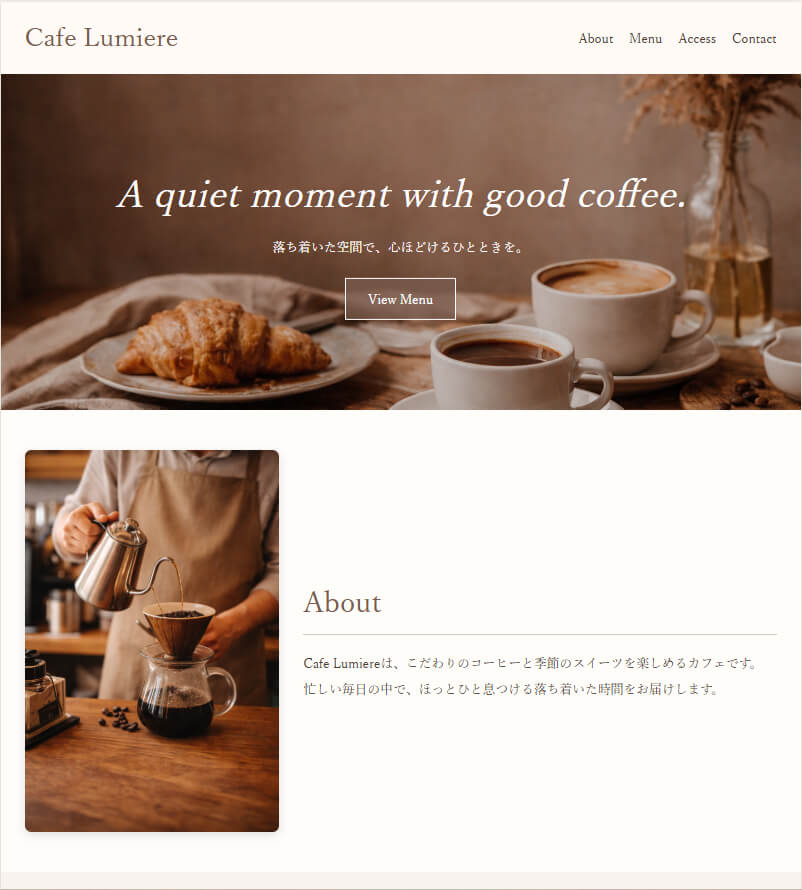

← 制作事例へ戻る
Website
カフェサイト
ナチュラルで落ち着いた世界観を意識して制作したカフェサイトです。 写真の見せ方や余白を大切にし、心地よく閲覧できるデザインを目指しました。

制作概要
目的：店舗の魅力を伝えること
ターゲット：20〜40代の女性を中心としたカフェ利用者
担当：デザイン / コーディング
工夫したポイント
余白を活かし、落ち着いた雰囲気が伝わるレイアウトにしました。
写真を大きく見せることで、店舗の空気感や魅力が伝わるようにしました。
ナチュラルな配色で、やさしく心地よい印象にまとめました。